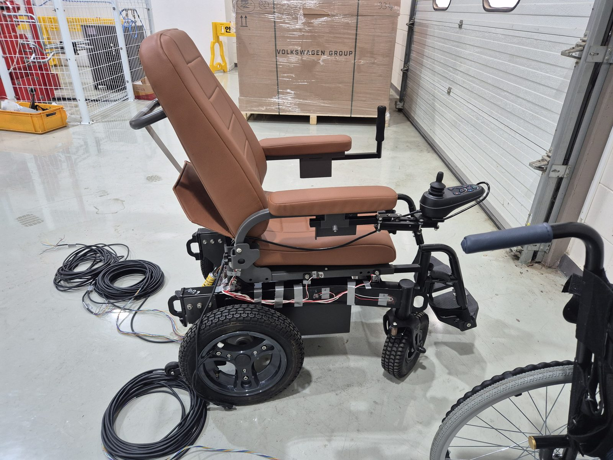
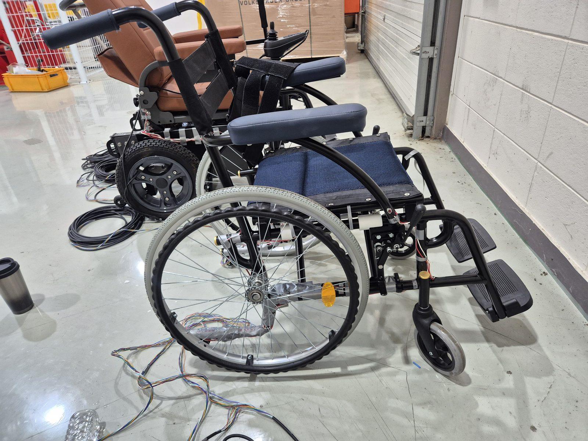
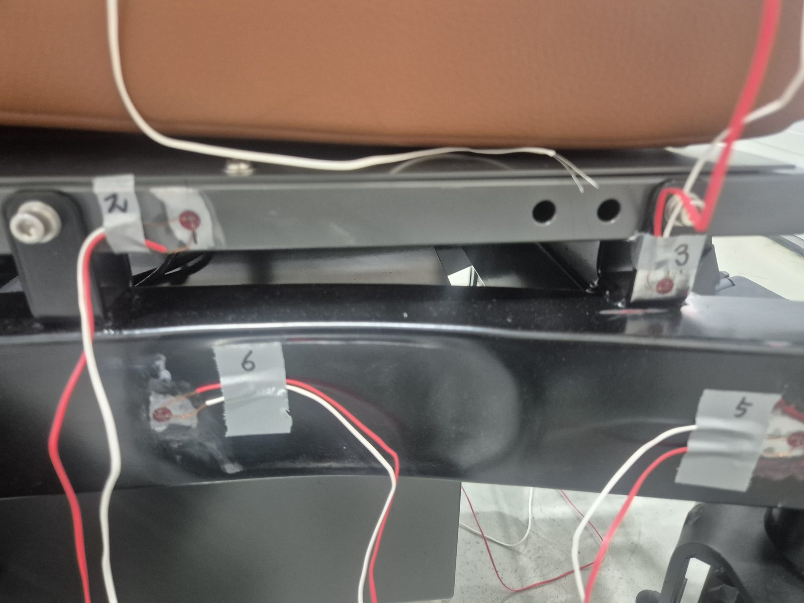
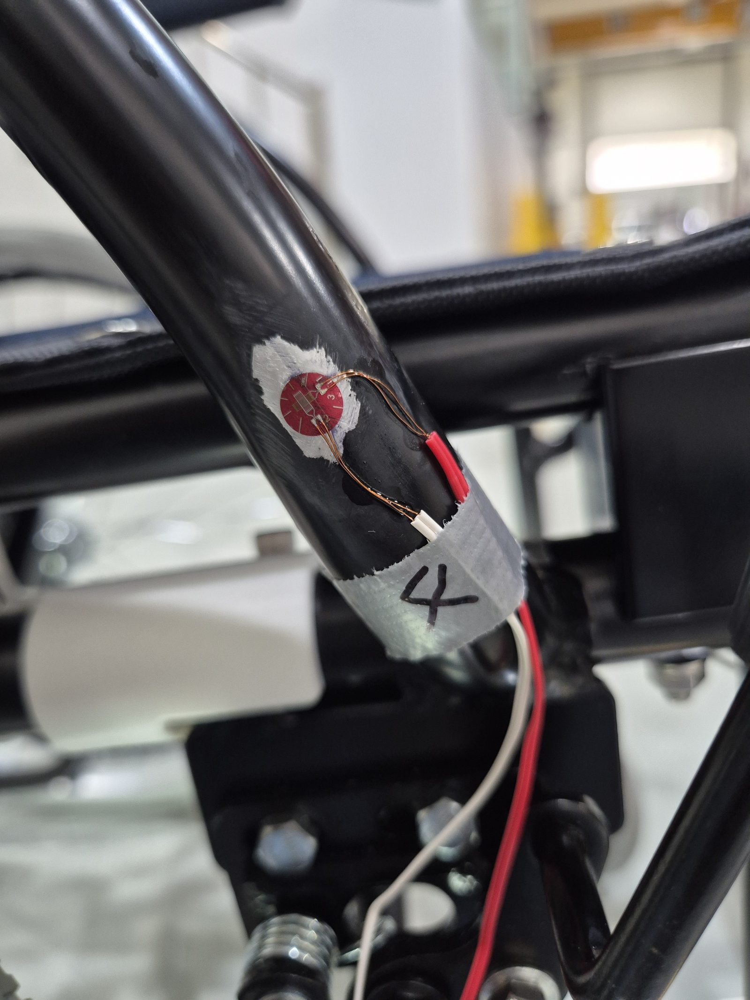
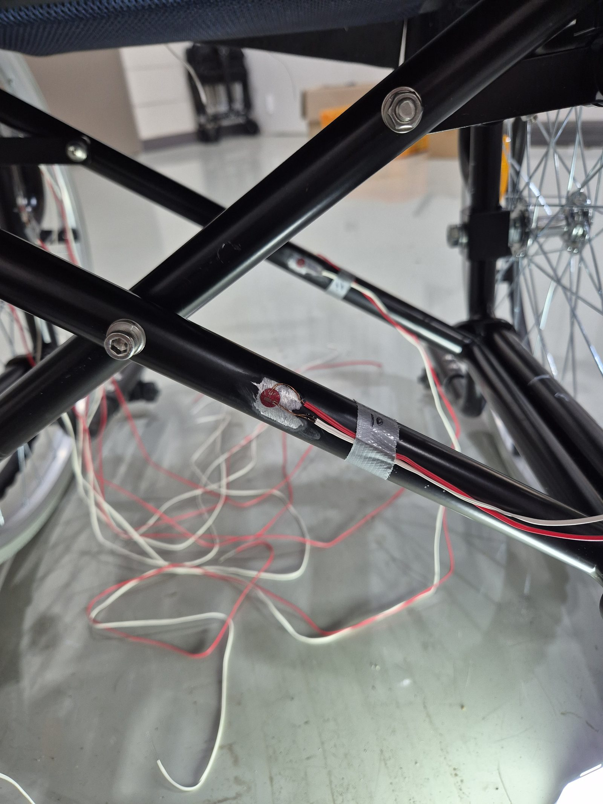
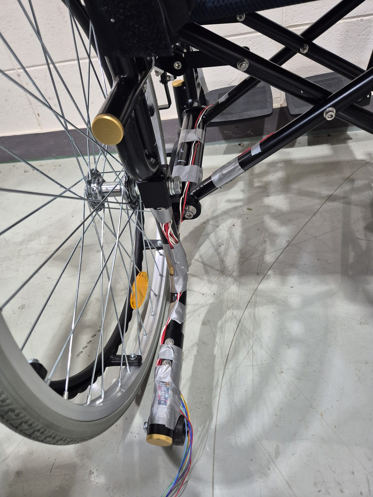
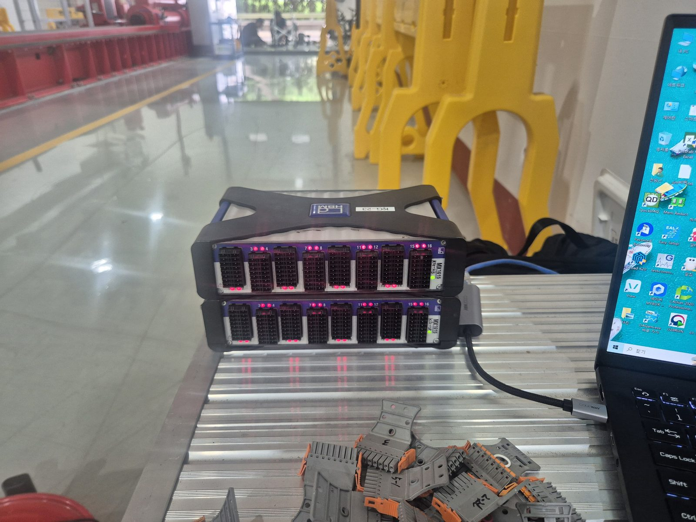
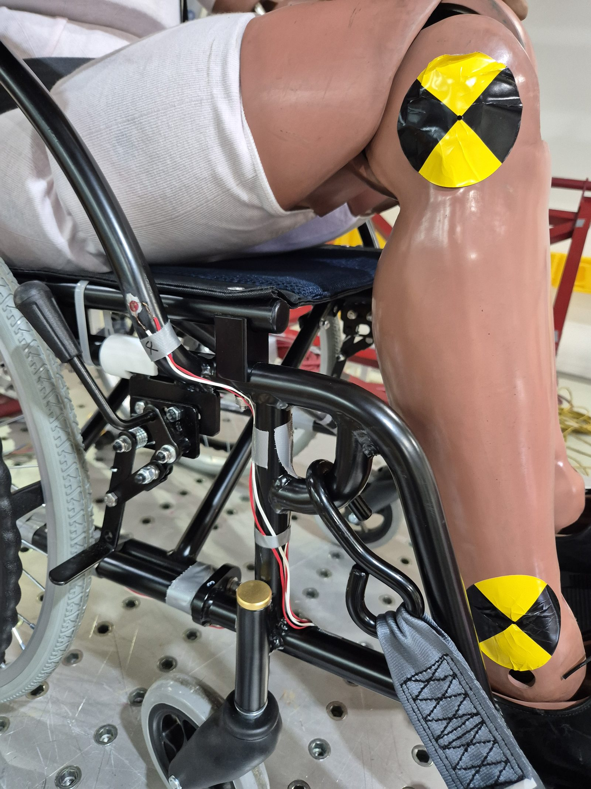

← 기술자료 목록
스트레인게이지 측정 사례
현장 계측 사례 · 휠체어 동적 충돌시험
스트레인게이지 측정 사례
휠체어 동적 충돌시험 고속 샘플링 계측
수동·전동 휠체어 프레임에 다중 포인트 스트레인게이지를 부착하고 HBM QuantumX DAQ로 32채널 이상을 동시 계측, 국내 공인시험기관의 동적 충돌(슬레드) 시험에서 19.6kHz 고속 샘플링으로 프레임 변형률을 실시간 측정한 현장 계측 사례입니다.
32+ 채널
프레임 다중 포인트
동시 계측
동시 계측
HBM QuantumX
MX1615/1815 DAQ ·
catmanAP 소프트웨어
catmanAP 소프트웨어
19.6kHz
고속 동적 샘플링
충돌 순간 파형 기록
충돌 순간 파형 기록
시험 개요
씨앤디테크는 수동·전동 휠체어 프레임 여러 지점에 스트레인게이지를 부착하고, 국내 공인시험기관의 동적 충돌(슬레드) 시험 설비에서 ATD(충돌시험용 더미)를 좌석벨트로 구속한 상태로 충돌 상황을 모사하며 프레임 변형률을 실시간으로 계측했습니다.

배선을 완료한 전동 휠체어

배선을 완료한 수동형·전동형 휠체어
계측 절차
프레임 전면에 걸쳐 게이지를 부착하고 채널을 정리한 뒤, 고속 동적 DAQ 시스템을 구성해 충돌 순간의 변형률을 왜곡 없이 기록했습니다.
01
다중 포인트 게이지 부착
프레임 여러 지점에 게이지 번호를 부여해 스트레인게이지 부착
02
배선 및 채널 정리
다핀 커넥터 블록으로 리드선을 색상별로 정리·결선
03
계측 대상 준비
수동형·전동형 휠체어 2기종에 배선을 완료해 시험 투입
04
DAQ 시스템 구성
HBM QuantumX DAQ 2대 32채널, SG 쿼터브릿지 120Ω 3선식 설정
05
고속 동적 샘플링
샘플링레이트 19.6kHz로 충돌 순간 파형 기록
06
충돌 슬레드 시험 진행
ATD·좌석벨트 구속 상태로 슬레드 주행, 전 채널 동시 계측

프레임 다중 포인트 게이지 부착

게이지 리드선 납땜부 클로즈업

프레임 관절부 게이지 부착

휠허브 인근 게이지·배선 클로즈업

HBM QuantumX DAQ 32채널

ATD·좌석벨트 구속 충돌시험
지원 역량 및 서비스 범위
씨앤디테크는 다중 포인트 스트레인게이지 부착부터 고속 동적 DAQ 시스템 구성, 공인시험기관 충돌·슬레드 시험 계측 지원까지 시험 설계부터 데이터 취득까지 원스톱으로 지원합니다.
관련 기술 자료 더 보기:
자주 묻는 질문 (FAQ)
휠체어 충돌시험 스트레인게이지 계측 관련 질문
충돌(슬레드) 시험 중 휠체어 프레임의 각 부위에 순간적으로 발생하는 동적 변형률(다이내믹 스트레인)을 측정합니다. 충돌 시 프레임에 가해지는 하중이 특정 용접부·연결부·튜브 구간에 집중되는지, 어느 지점에서 항복점에 근접한 변형이 발생하는지를 실측 데이터로 확인해 구조적 안전성을 정량적으로 검증하는 것이 목적입니다.
휠체어 프레임은 좌석 지지대, 뒷바퀴 축, 발판 지지대, 구동부 마운트 등 하중 경로가 여러 갈래로 나뉘는 복잡한 구조물입니다. 한두 지점만 계측하면 실제 최대 변형이 발생하는 위치를 놓칠 수 있어, 프레임 전체에 게이지 번호를 부여한 다중 포인트를 동시에 계측했습니다. 이 시험에서는 HBM QuantumX MX1615/1815 DAQ 2대를 연결해 32채널을 동시에 수집했습니다.
쿼터브릿지(1/4 브리지)는 휘트스톤 브리지의 4변 중 1개 변에만 스트레인게이지를 연결하는 가장 기본적인 결선 방식이며, 120Ω은 사용한 게이지의 저항 규격입니다. 3선식(3-wire) 결선은 리드선 저항의 온도 변화가 측정값에 미치는 영향을 상쇄하기 위한 배선 방식으로, 리드선이 길거나 다채널을 동시에 배선하는 현장 계측에서 표준적으로 사용됩니다.
충돌은 수십~수백 밀리초(ms) 안에 하중이 급격히 상승·하강하는 동적 이벤트입니다. 정적 하중 시험처럼 초 단위로 값을 읽는 방식으로는 충돌 순간의 피크 변형률을 놓치게 되므로, 이 시험에서는 샘플링레이트 19.6kHz로 계측해 충돌 순간의 파형을 왜곡 없이 기록했습니다.
국내 공인시험기관의 동적 충돌(슬레드) 시험 설비에서 진행되었습니다. 휠체어를 충돌 슬레드에 고정하고 ATD(충돌시험용 더미)를 좌석벨트로 구속한 상태에서 슬레드를 주행시켜 충돌 상황을 모사하고, 동시에 프레임에 부착된 스트레인게이지로 각 부위의 변형률을 실시간 기록했습니다.
동적·충돌 계측 지원 문의
계측 대상, 시험 목적, 채널 수를 알려주시면 최적 게이지 구성과 DAQ 시스템을 안내해 드립니다. 공인시험기관 현장 출장 계측도 지원합니다.